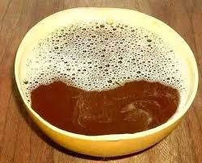

Le Dolo
Encore appellé TCHAPALO ou YANMOU en Bwamu,le dolo est la boisson la plus consommée dans la ville.Il n'y a pas de km² dans cette ville où il n'ya pas de cabarets ou TCHAPALODROME.Cette boisson est la plus consommée dans la ville et est surtout utilisée lors des cultes avec les dieux où les manes des ancètres!!!

La Viande de Porc
Encore appellé COUCOURI NEEMDO en mooré,cette viande est l'une des viandes les plus prisées dans la ville en plus de la viande de chien(voir images suivantes)Elle s'accompagne surtout de Dolo lors de sa consommation et fait du porc un animal dont l'élevage est très développé.


La Viande de Chien
Animal dont la viande est le plus doux le chien fait baver beaucoup les Bwa. Quiconque veut se débarrasser de son chien, qu'il fasse appelle aux Bwa; ils feront le travail en moins de 5mn